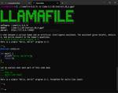

Mozilla Hacks – the Web developer blog
https://hacks.mozilla.org/
Mozilla Hacks is written for web developers, designers and everyone who builds for the Web. Hacks is produced by Mozilla's Developer Relations team and features hundreds of posts from Mozilla ...
フィード

Llamafile v0.8.14: a new UI, performance gains, and more
Mozilla Hacks – the Web developer blog
Discover the latest release of Llamafile 0.8.14, an open-source AI tool by Mozilla Builders. With a new command-line chat interface, enhanced performance, and support for powerful models, Llamafile makes it easy to run large language models (LLMs) on your own hardware. Learn more about the updates and how to get involved with this cutting-edge project.The post Llamafile v0.8.14: a new UI, performance gains, and more appeared first on Mozilla Hacks - the Web developer blog.
1日前

0Din: A GenAI Bug Bounty Program – Securing Tomorrow’s AI Together
Mozilla Hacks – the Web developer blog
As AI continues to evolve, so do the threats against it. As these GenAI systems become more sophisticated and widely adopted, ensuring their security and ethical use becomes paramount. 0Din is a groundbreaking GenAI bug bounty program dedicated specifically to help secure GenAI systems and beyond. In this blog, you'll learn about 0Din, how it works, and how you can participate and make a difference in securing our AI future.The post 0Din: A GenAI Bug Bounty Program – Securing Tomorrow’s AI Together appeared first on Mozilla Hacks - the Web developer blog.
2ヶ月前
Announcing Official Puppeteer Support for Firefox
Mozilla Hacks – the Web developer blog
We’re pleased to announce that, as of version 23, the Puppeteer browser automation library now has first-class support for Firefox. This means that it’s now easy to write automation and perform end-to-end testing using Puppeteer, and run against both Chrome and Firefox.The post Announcing Official Puppeteer Support for Firefox appeared first on Mozilla Hacks - the Web developer blog.
2ヶ月前
Snapshots for IPC Fuzzing
Mozilla Hacks – the Web developer blog
Process separation remains one of the most important parts of the Firefox security model and securing our IPC (Inter-Process Communication) interfaces is crucial to keep privileges in the different processes separated. We take a more detailed look at our newest tool for finding vulnerabilities in these interfaces – snapshot fuzzing.The post Snapshots for IPC Fuzzing appeared first on Mozilla Hacks - the Web developer blog.
4ヶ月前
Sponsoring sqlite-vec to enable more powerful Local AI applications
Mozilla Hacks – the Web developer blog
Today we’re proud to announce the next Mozilla Builders project: sqlite-vec. Led by independent developer Alex Garcia, this project brings vector search functionality to the beloved SQLite embedded database. Alex has been working on this problem for a while, and we think his latest approach will have a great impact by providing application developers with a powerful new tool for building Local AI applications.The post Sponsoring sqlite-vec to enable more powerful Local AI applications appeared first on Mozilla Hacks - the Web developer blog.
4ヶ月前
Experimenting with local alt text generation in Firefox Nightly
Mozilla Hacks – the Web developer blog
Firefox 130 will introduce an experimental new capability to automatically generate alt-text for images using a fully private on-device AI model. The feature will be available as part of Firefox’s built-in PDF editor, and our end goal is to make it available in general browsing for users with screen readers.The post Experimenting with local alt text generation in Firefox Nightly appeared first on Mozilla Hacks - the Web developer blog.
5ヶ月前
Llamafile’s progress, four months in
Mozilla Hacks – the Web developer blog
When Mozilla’s Innovation group first launched the llamafile project late last year, we were thrilled by the immediate positive response from open source AI developers. It’s become one of Mozilla’s top three most-favorited repositories on GitHub, attracting a number of contributors, some excellent PRs, and a growing community on our Discord server.The post Llamafile’s progress, four months in appeared first on Mozilla Hacks - the Web developer blog.
6ヶ月前
Porting a cross-platform GUI application to Rust
Mozilla Hacks – the Web developer blog
In this blog post, we delve into the motivations for choosing Rust for our crash reporter, outline the unique challenges of designing an application that operates when the main browser has failed, and discuss the new architecture we've implemented. We also share insights into the technical nuances of the implementation, demonstrating how Rust's features are leveraged to handle crashes more effectively and securely.The post Porting a cross-platform GUI application to Rust appeared first on Mozilla Hacks - the Web developer blog.
6ヶ月前
Prototype even faster with the Gradio UI for Figma component library
Mozilla Hacks – the Web developer blog
In the fast-paced world of generative AI, staying ahead means moving swiftly and smartly. That's why we've embraced Gradio, the low-code prototyping toolkit from Hugging Face, as our go-to for bringing new ideas to life. The post Prototype even faster with the Gradio UI for Figma component library appeared first on Mozilla Hacks - the Web developer blog.
6ヶ月前
Improving Performance in Firefox and Across the Web with Speedometer 3
Mozilla Hacks – the Web developer blog
In collaboration with the other major browser engine developers, Mozilla is thrilled to announce Speedometer 3 today. Like previous versions of Speedometer, this benchmark measures what we think matters most for performance online: responsiveness. But today’s release is more open and more challenging than before, and is the best tool for driving browser performance improvements that we’ve ever seen.The post Improving Performance in Firefox and Across the Web with Speedometer 3 appeared first on Mozilla Hacks - the Web developer blog.
7ヶ月前
Announcing Interop 2024
Mozilla Hacks – the Web developer blog
Following the success of Interop 2023, we are pleased to confirm that the project will continue in 2024 with a new selection of focus areas, representing areas of the web platform where we think we can have the biggest positive impact on users and web developers. The post Announcing Interop 2024 appeared first on Mozilla Hacks - the Web developer blog.
9ヶ月前
Option Soup: the subtle pitfalls of combining compiler flags
Mozilla Hacks – the Web developer blog
During the Firefox 120 beta cycle, a new crash signature appeared on our radars with significant volume. Engineers working on Firefox, explore the subtle pitfalls of combining compiler flags.The post Option Soup: the subtle pitfalls of combining compiler flags appeared first on Mozilla Hacks - the Web developer blog.
9ヶ月前
Puppeteer Support for the Cross-Browser WebDriver BiDi Standard
Mozilla Hacks – the Web developer blog
Puppeteer now supports the next-generation, cross-browser WebDriver BiDi standard. This new protocol makes it easy for web developers to write automated tests that work across multiple browser engines.The post Puppeteer Support for the Cross-Browser WebDriver BiDi Standard appeared first on Mozilla Hacks - the Web developer blog.
10ヶ月前
Firefox Developer Edition and Beta: Try out Mozilla’s .deb package!
Mozilla Hacks – the Web developer blog
A month ago, we introduced our Nightly package for Debian-based Linux distributions. Today, we are proud to announce we made our .deb package available for Developer Edition and Beta!The post Firefox Developer Edition and Beta: Try out Mozilla’s .deb package! appeared first on Mozilla Hacks - the Web developer blog.
1年前
Introducing llamafile
Mozilla Hacks – the Web developer blog
We're thrilled to announce the first release of llamafile, inviting the open source community to join this groundbreaking project. With llamafile, you can effortlessly convert large language model (LLM) weights into executables. Imagine transforming a 4GB file of LLM weights into a binary that runs smoothly on six different operating systems, without requiring installation. The post Introducing llamafile appeared first on Mozilla Hacks - the Web developer blog.
1年前
Mozilla AI Guide Launch with Summarization Code Example
Mozilla Hacks – the Web developer blog
Mozilla has just launched the AI Guide, a collaborative hub for developers to join forces, inspire each other, and lead the way in groundbreaking generative AI advancements. The AI Guide’s initial focus begins with language models and the aim is to become a collaborative community-driven resource covering other types of models.The post Mozilla AI Guide Launch with Summarization Code Example appeared first on Mozilla Hacks - the Web developer blog.
1年前
Down and to the Right: Firefox Got Faster for Real Users in 2023
Mozilla Hacks – the Web developer blog
To deliver against our vision and enable a better online experience for everyone, we’ve been working hard on making Firefox even faster. We’re extremely happy to report that this has resulted in a significant improvement in speed over the past year. The post Down and to the Right: Firefox Got Faster for Real Users in 2023 appeared first on Mozilla Hacks - the Web developer blog.
1年前
Built for Privacy: Partnering to Deploy Oblivious HTTP and Prio in Firefox
Mozilla Hacks – the Web developer blog
Protecting user privacy is a core element of Mozilla’s vision for the web and the internet at large. In pursuit of this vision, we’re pleased to announce new partnerships with Fastly and Divvi Up to deploy privacy-preserving technology in Firefox.The post Built for Privacy: Partnering to Deploy Oblivious HTTP and Prio in Firefox appeared first on Mozilla Hacks - the Web developer blog.
1年前
Faster Vue.js Execution in Firefox
Mozilla Hacks – the Web developer blog
Firefox performance on Vue.js has improved significantly throughout the year. Most recently, we sped up reactivity with Proxy optimizations. This change landed in Firefox 118, so it’s currently on Beta and will ride along to Release by the end of September.The post Faster Vue.js Execution in Firefox appeared first on Mozilla Hacks - the Web developer blog.
1年前
Autogenerating Rust-JS bindings with UniFFI
Mozilla Hacks – the Web developer blog
This blog post will walk through how we developed UniFFI: a Rust library for auto-generating foreign language bindings. We will walk through some of the issues that arose along the way and how we handled them.The post Autogenerating Rust-JS bindings with UniFFI appeared first on Mozilla Hacks - the Web developer blog.
1年前